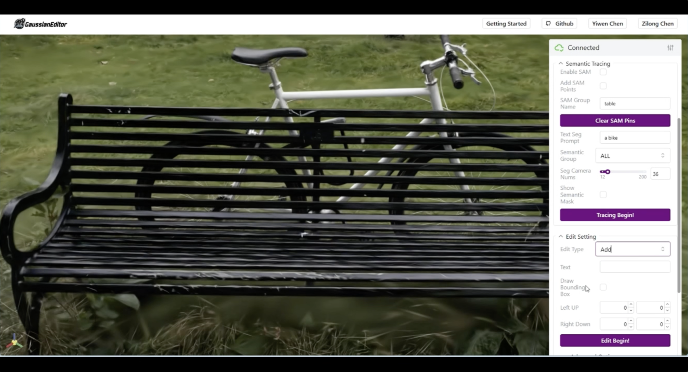
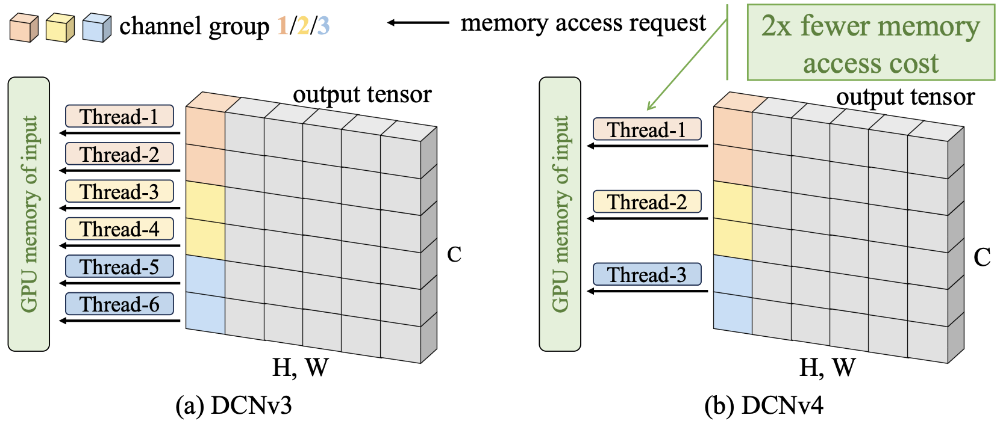
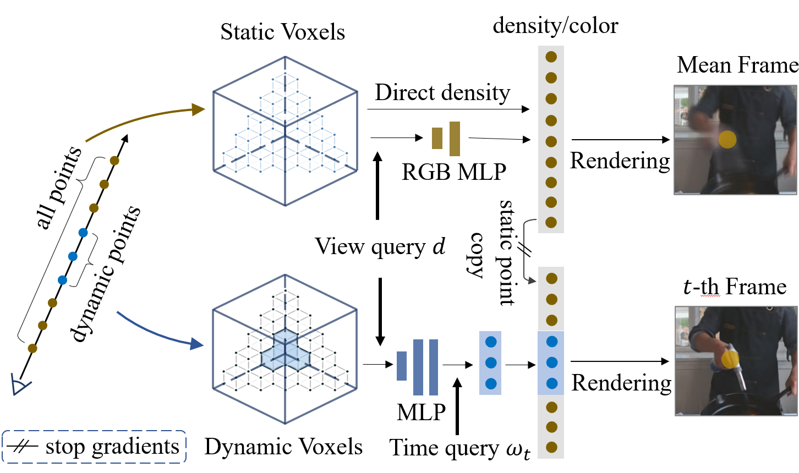
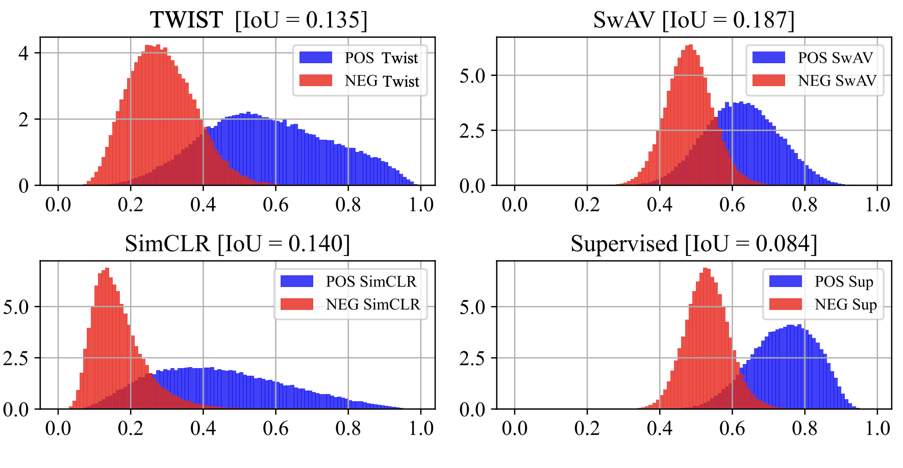
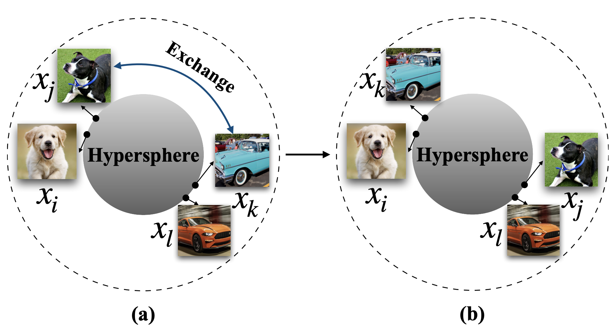
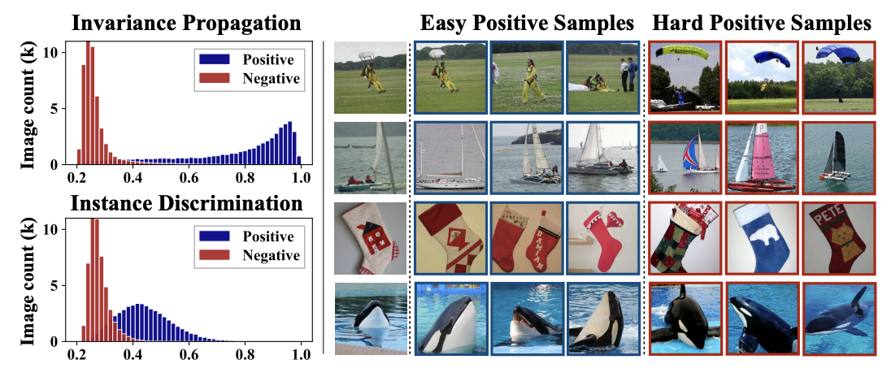
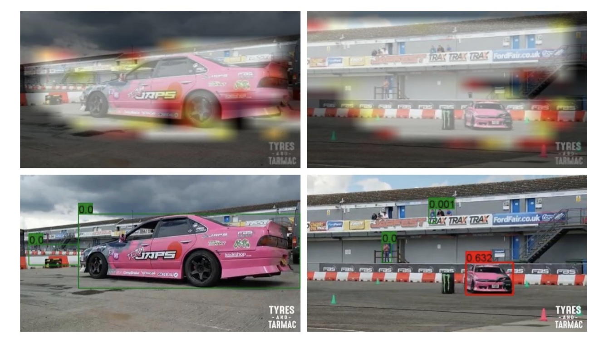

|
Feng Wang I'm a now a final-year Ph.D. student at Tsinghua University. My research interests lie in 3D reconstruction/generation, representation learning, self-supervised learning, etc. Google Scholar GitHub Email: fwangeve@foxmail.com |
|
|
Text-to-3D using Gaussian Splatting
Zilong Chen, Feng Wang†, Yikai Wang, Huaping Liu†. IEEE Conference on Computer Vision and Pattern Recognition (CVPR), 2024 Project Page / GitHub / arXiv |
|

|
GaussianEditor: Swift and Controllable 3D Editing with Gaussian Splatting
Yiwen Chen*, Zilong Chen*, Chi Zhang, Feng Wang, Xiaofeng Yang, Yikai Wang, Zhongang Cai, Lei Yang, Huaping Liu, Guosheng Lin. IEEE Conference on Computer Vision and Pattern Recognition (CVPR), 2024 project page / GitHub / arXiv |
|

|
Efficient Deformable ConvNets: Rethinking Dynamic and Sparse Operator for Vision Applications
Yuwen Xiong*, Zhiqi Li*, Yuntao Chen*, Feng Wang*, Xizhou Zhu, Jiapeng Luo, Wenhai Wang, Tong Lu, Hongsheng Li, Yu Qiao, Lewei Lu, Jifeng Dai†. IEEE Conference on Computer Vision and Pattern Recognition (CVPR), 2024 arXiv / GitHub |

|
Masked Space-Time Hash Encoding for Efficient Dynamic Scene Reconstruction
Feng Wang*, Zilong Chen*, Guokang Wang, Yafei Song, Huaping Liu†. Advances in Neural Information Processing Systems (NeurIPS), 2023, Spotlight project page / GitHub / arXiv A novel method for efficiently reconstructing dynamic 3D scenes from multi-view or monocular videos, with only 20 minutes for achieving sota results. |
|

|
Mixed Neural Voxels for Fast Multi-view Video Synthesis
Feng Wang, Sinan Tan, Xinghang Li, Zeyue Tian, Yafei Song, Huaping Liu†. International Conference on Computer Vision (ICCV), 2023, Oral project page / GitHub / arXiv A novel method for efficiently reconstructing dynamic 3D scenes. |
|

|
Self-supervised learning by estimating twin class distributions
Feng Wang, Tao Kong, Xinghang Li, Rufeng Zhang, Huaping Liu†. Hang Li. IEEE Transactions on Image Processing (TIP), 2023 GitHub / arXiv A theoretical explainable self-supervised learning method by classifying unlabeled datasets. |
|

|
Understanding the Behaviour of Contrastive Loss
Feng Wang, Huaping Liu†. IEEE Conference on Computer Vision and Pattern Recognition (CVPR), 2021 Paper We analyze the behaviours of the contrastive loss and explain the effect of temperature. |
|

|
Unsupervised Representation Learning by Invariance Propagation
Feng Wang, Huaping Liu†. Di Guo. Fuchun Sun. Advances in Neural Information Processing Systems (NeurIPS), 2020, Spotlight Paper / GitHub |
|

|
Sound-indicated visual object detection for robotic exploration
Feng Wang, Di Guo. Huaping Liu†. Junfeng Zhou. Fuchun Sun. International Conference on Robotics and Automation (ICRA), 2019 Paper |
Open source project (GitHub)
|
|
3d-gaussian-splatting
Feng Wang GitHub An unofficial implmentation of 3D Gaussian Splatting, released before the official version. We implement the CUDA kernel of the rasterizer and the training strategy through pytorch. |
|
|
Segment Anything in NeRF
Feng Wang, Zilong Chen GitHub SAM-NeRF: A Simple Baseline for Segmenting Anything in NeRF with Language Prompts. |
This page is based on Jon Barron's template. Thank Jon Barron for sharing.